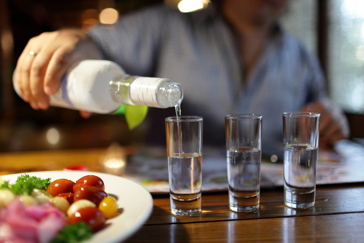

Что такое водка


" История русской водки от полугара до наших дней . "
А также из других источников Интернет
Уважаемый Читатель - после ознакомления с Книгой
рекомендую Вам заказать ее бумажное издание.
До недавних пор водка являлась самым популярным алкогольным напитком в России. Потом ее с пьедестала почета вытеснило пиво. Но это не значит, что водка потеряла былую известность. Ее не только пьют, но и используют в качестве основы для настоек, лосьонов и растираний. Поэтому водка остается одним из самых популярных алкогольных напитков.
Водка (англ. vodka) – крепкий алкогольный напиток, который представляет собой смесь очищенной воды и ректификованного этилового спирта. По ГОСТу крепость водки должна варьироваться от 40 до 56%, но чаще всего можно встретить именно 40% напиток.
Если говорить о времени создания данного алкогольного напитка, то точная дата неизвестна. Но можно сказать о том, что некое подобие водки впервые изготовил врач из Персии Ар-Рази. Это произошло в 11 веке. Многие люди считают, что «отец» водки – известный ученый Менделеев, но на самом деле это не совсем так. Химик создал водно-спиртовой раствор, который послужил основой для дальнейшего производства водки.
Водка в современном ее виде начала появляться в середине 19 века, когда были изготовлены промышленные аппараты для выработки спирта.
Если говорить о сегодняшнем дне, то этот крепкий алкогольный напиток пользуется большой популярностью во многих странах мира. Но, если жители стран СНГ привыкли употреблять водку в «чистом» виде, то европейцы и американцы в основном используют ее в качестве добавки к коктейлям.
Несмотря на то, что первое подобие водки был создан в Персии, она считается национальным русским напитком. И это неудивительно, ведь ни в одной стране мира не употребляется столько водки, сколько в России.
Внимание посетителям
Администрация Сайта напоминает, что чрезмерное употребление спиртных напитков вредит Вашему здоровью.
Данный ресурс создан исключительно для повышения культуры питья алкогольных напитков и не пропагандирует употребление алкоголя.
- Что такое водка.
- Введение.
- Небольшой отрывок из книги М. Булгакова «Собачье сердце».
- Крепкие алкогольные напитки России с момента создания и до конца XIX века.
- Причины исчезновения хлебного вина и замены его на современную водку.
- Что такое современная русская водка.
- Сивушное масло и другие примеси.
- Слово «водка» — его происхождение и трансформация значения.
- Современное хлебное вино — «Полугар».
- Глава 1. Русский национальный напиток — хлебное вино.
- Глава 2. Расцвет полугара и его производных — ароматных водок.
- Глава 3. «Алкогольная революция»: хлебное вино в опале.
- Глава 4. Техническая революция XIX в. и алкогольные дистилляты.
- Глава 5. Окончательная утрата традиций.
- Глава 6. О примесях.
- Глава 7. «Водка». Слово-хамелеон.
- Глава 8. В стране мифов.
- Глава 9. Алкогольно-гастрономические альянсы.
- Немного о культуре пития ... .
- Какие бывают водки .
- Целебные и специальные водки.
- Алкогольный FAQ.
- Литература.